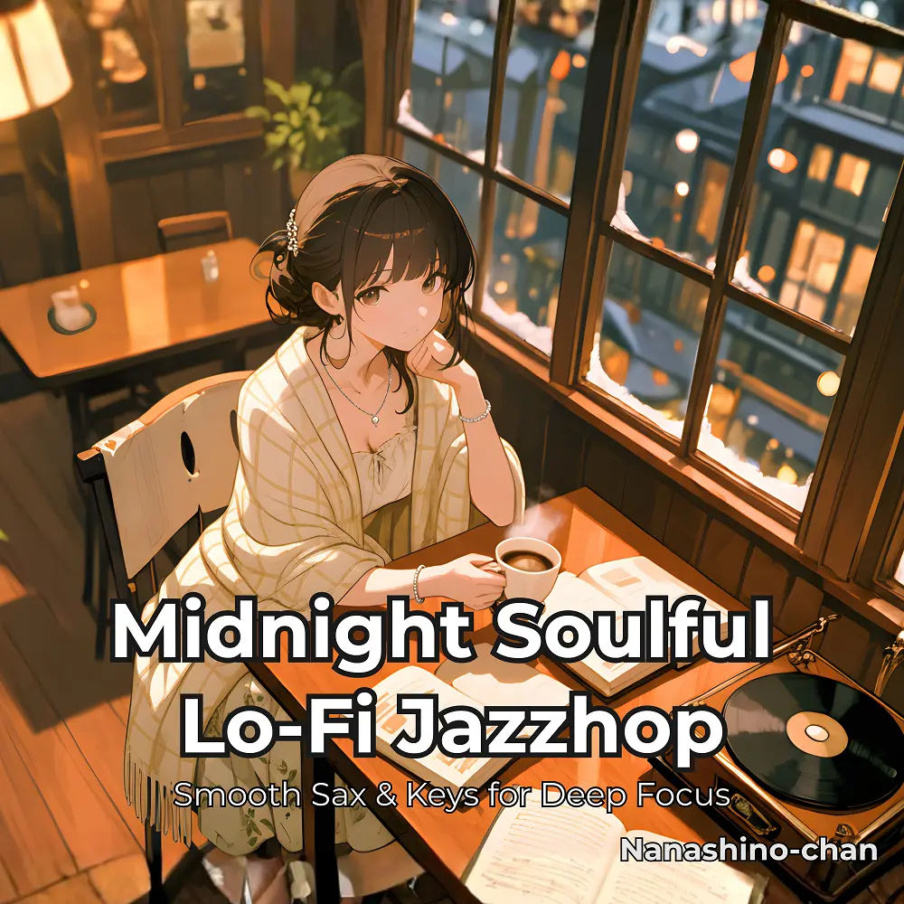

Lo-Fi · Jazzhop
Midnight Soulful Lo-Fi Jazzhop:Smooth Sax & Keys for Deep Focus
Nanashino-chan
Nanashino-chanの「Midnight Soulful Lo-Fi Jazzhop:Smooth Sax & Keys for Deep Focus」。Lo-Fi / Jazzhopを楽しめる全19曲のインストゥルメンタル作品です。「Dreaming in Sepia / Coffee & Midnight Rain」などを収録。気になる曲を試聴して、配信サービスでお気に入りを見つけてください。
2026-01-30 リリース · 19 曲 · Instrumental
アルバムを試聴
気になる音楽を、ここから。
曲を選ぶまでジャケットを表示します。試聴にはYouTubeを使用します。
YOUTUBE PREVIEW
試聴する曲を選んでください
曲を選ぶまでジャケットを表示します。試聴にはYouTubeを使用します。
再生できない場合は、配信サービスでアルバムや曲を開いてください。
配信サービスでアルバムを探す
「検索」のリンクは検索結果を開きます。サービス内でアルバムや曲を選択してください。
収録曲一覧 19
- 01Dreaming in Sepia
- 02Coffee & Midnight Rain
- 03Loops of Light
- 04City Soul Sketch
- 05Lazy Window Breeze
- 06Distant Sax Echoes
- 07Creamy Vinyl Mornings
- 08Twilight Transit
- 09Quiet Conversations
- 10Honey Drip Keys
- 11Night Groove Reverie
- 12Lo-Fi Lullaby
- 13Jazzy Side Streets
- 14Faded Neon Memories
- 15Sunset Loops
- 16Nostalgia Café
- 17Dim Streetlight Waltz
- 18Warmth in Loops
- 19Final Fade
SNSで使いたい音源を探す
「Nanashino-chan ＋ 曲名」をコピーして、SNSアプリの音源検索に貼り付けてください。音源の表示は地域やアカウントにより異なります。コピー機能は利用許諾を付与するものではありません。